Designer behind Alamy's AI Search Assistant, now live, and the tools the content team uses every day. Every idea is tested with real users before it ships.
Nearly 4 years in product design, after starting as a software developer. Computer science graduate, looking for product designer roles in the UAE.
AI product designSearch and discoveryComplex internal toolsResearch and usability testing
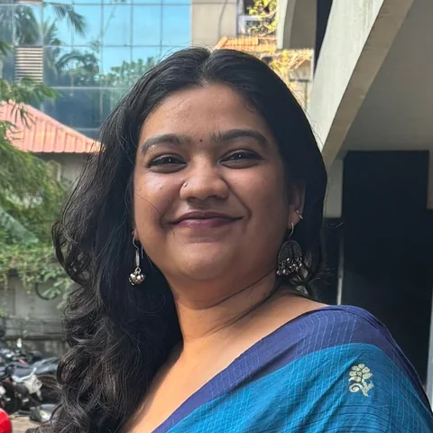
Latest work
Live in beta on alamy.com
AI Search Assistant
I took an inherited concept for conversational image search to beta by solving three problems: where it should live on the page, how to make it stand out, and how to stop it clashing with Smart Search.
Took AI Search Assistant from inherited concept to beta, and designed Customer and Curated Collections for the Lightbox rebuild, with Curated Collections built into my 2024 curation tool.
Dec 2022 – Mar 2026
Junior Product Designer, Alamy
Moved into design in December 2022. Led service design discovery, mapping the Enterprise and Contributor journeys end to end, then designed an internal curation tool that gave the content team near real-time control over search.
Jul – Dec 2022
Software Developer, Alamy
Built front-end and back-end features for Alamy's public website, and reusable, accessible UI components.
2019 – 2021
UI/UX design internships
Designed user journeys, wireframes and prototypes, including a medical consultation app at Larkcs Life Link.
2018 – 2022
BTech, Computer Science and Engineering
College of Engineering Trivandrum, with a GPA of 8.9.
How I work
Find the real problem first
I ask why until the brief changes, not just the design.
Asking why turned "Lightbox 2.0" into two products for two very different audiences. Lightbox rebuild →
Let evidence settle debates
When ideas compete, I test them and combine what works.
Testing two opposite placements and combining them lifted discovery from 50% to 83%. AI Search Assistant →
Bring the team into the work
The people closest to the problem shape the design with me.
I tested with the content team every week, and together we took search fixes from days to under 24 hours. Behind the Search →
Build with AI, inside the system
AI speeds me up, but it builds from our real design system, not look-alikes.
An audit I ran with Claude Code checked every screen against the requirements and flagged 8 gaps before handoff. Lightbox rebuild →
Beyond the screen
Off screen, you'll usually find me on a stage, on a run, or chasing a sunset. I host team events at Alamy, sing at open mics, and recently named and branded a live music series.
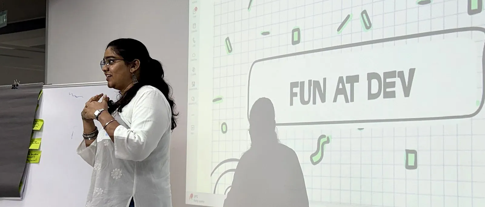
Hosting Fun at Dev, a team event at Alamy.Photo by our CTO
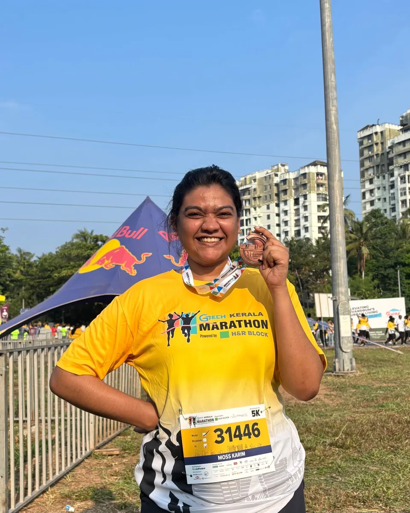
Finished the 5K at the GTech Kerala Marathon, Trivandrum.
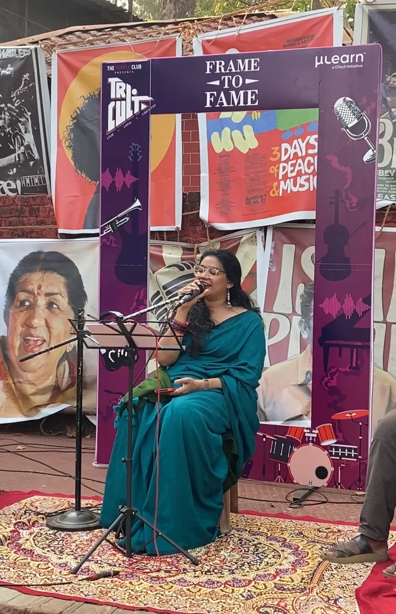
Singing at a recent open mic.
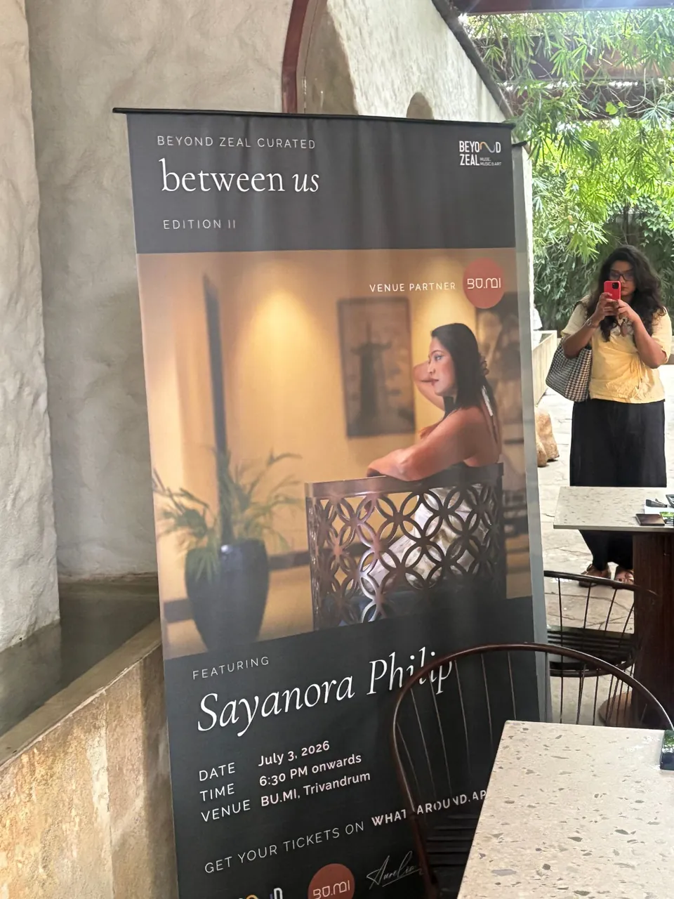
At between us, Edition II, the music series I named and branded.
A conversational way to find stock images. I took it from an inherited concept to a live beta by solving three problems: where it lives on the page, how it stands out as AI, and how it stops clashing with Smart Search. Then I designed how the AI itself behaves.
My role
Product Designer: research, interaction and visual design, prototyping, design system components
Timeline
2026. Testing in June, beta launch on 17 September
Team
Search Assistant pod: product, engineering, SEO and analytics, with me as the product designer
I owned
Research and testing, interaction and visual design, prototyping, the AI button components and the Smart Search redesign
Tools
Figma with Alamy DS 2.0, Claude Code, UserTesting.com, GA4, Microsoft Clarity
Keyword search fails people who know exactly what they want
"A candid woman laughing outdoors in warm golden light" is a sentence, not a list of keywords. People who can describe the image they need often can't turn it into the words search understands, so they give up or settle. The business wanted more search use, more licensing, and a clear AI advantage over competitors.
How do we add a conversational assistant to a familiar search page so people notice it, understand it's different from Smart Search, and can always get back to classic search?
Constraints: results must never be pushed down the page, classic search must keep working for people who don't want AI, and the assistant had to sit beside Smart Search, an existing feature with a very similar name.
What I found
I inherited a concept, and three problems
I took over mid-flight from another designer, and took ownership of research, iteration and the final design. The concept put the chat beside the results, which was a strong idea I kept. But one version was hidden in a filters tab, and chat bubbles, chips and buttons all shared the same green.
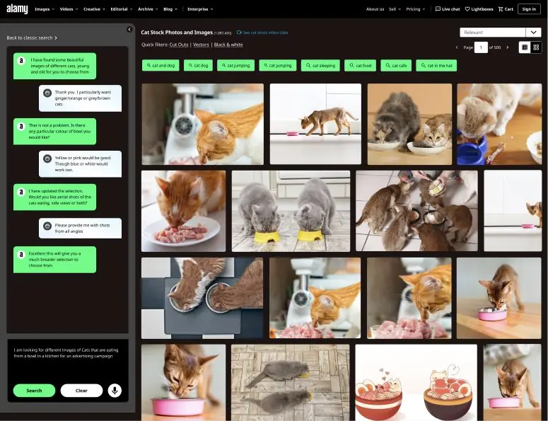
Dark mode version
Chat in a sidebar, with a small text link back.
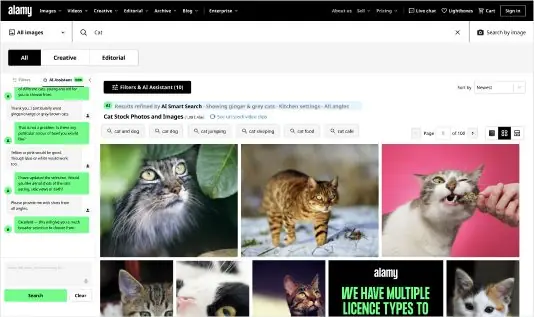
Inside the filters panel
"AI Assistant" and "AI Smart Search" on the same screen.
The naming was the biggest trap. To users, Smart Search (better keyword matching, a toggle in the search bar) and Search Assistant (a conversation) both sounded like "the AI thing". That gave me three problems to solve in order:
Placement. Where should the assistant live so people notice it without losing their results?
Visibility. How should the entry point look so it reads as something new, not another link?
The clash. How do Smart Search and Search Assistant stop looking like the same thing?
Problem 1: placement
Explore wide, test two opposite bets, then combine
I explored several entry points, from tabs to a sidebar to a button beside filters, then narrowed them to two opposite ideas.
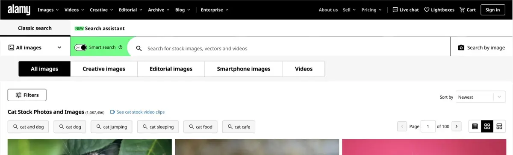
Tabs above search
Two modes above the search box.
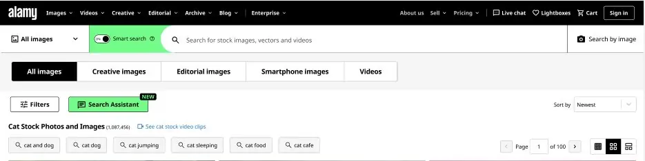
Button beside filters
A green button with a NEW badge.
Then I ran three rounds of unmoderated testing on UserTesting.com: 12 participants per round, all regular stock image buyers from the UK, US, Australia, Brazil and India. Every round used the same five tasks, from noticing the feature to getting back to classic search.
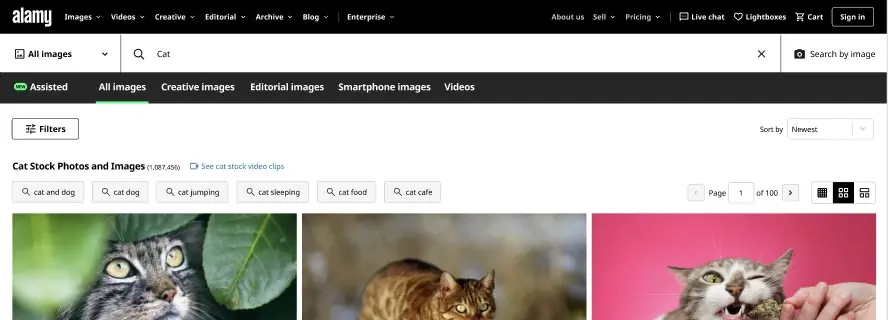
Variant A: tabs
A clear model of two modes and an obvious way back, but it blended into the navigation.
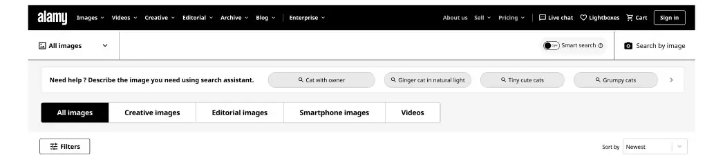
Variant B: banner
Far more visible, but once inside, people struggled to get back.
Metric
A: tabs
B: banner
C: hybrid
Noticed without being asked
50%
75%
83%
Time to find (prompted)
31.5s
18.5s
16.5s
Return to classic search (median)
54s
92s
66.5s
Ease inside the assistant (SEQ /7)
6.4
6.2
6.6
Variant C combined A's clear structure with B's prominence, and named the way back: "← Classic search" instead of an X. It won on discovery and speed. Round 3 confirmed what the final design needed: a prominent entry point, and a named way back.
What shipped: a Search Assistant button on the results page that opens the assistant on its own page, and a "Back to classic search" button inside it.
The confirmed placement. At this stage the button was still green.
Problem 2: visibility
A new AI button, so the assistant never looks like a nav link
Alamy's green already meant "main action": "Learn more", "Create account now", even the old Smart Search. An AI feature in the same green would read as one more of them. So I gave AI its own look: a purple gradient button with a sparkle icon, a Beta tag, and the prompt "Describe the image or video you're looking for."
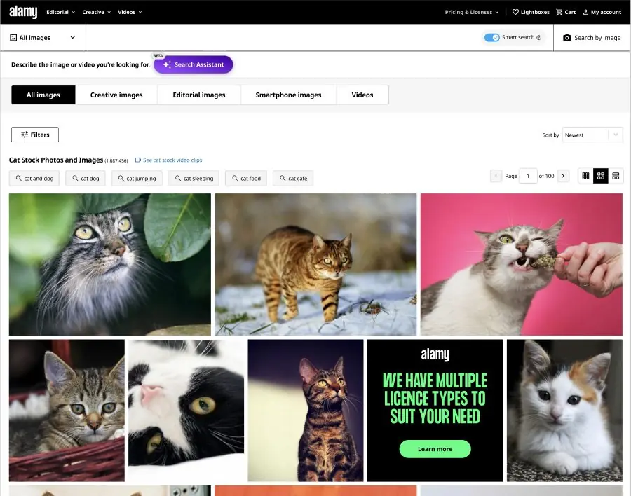
The final results page, with the purple button under the search bar.
I added it to Alamy DS 2.0 as a new token family, matched to an "ai" variant of the Button component in code: a pill button, plus 48px (mobile) and 64px (desktop) floating buttons, each with hover and disabled states.
Why new tokens? The existing icon/purple token was only defined for icons, not for a button people click again and again, so AI got its own token family instead of borrowing an existing colour.
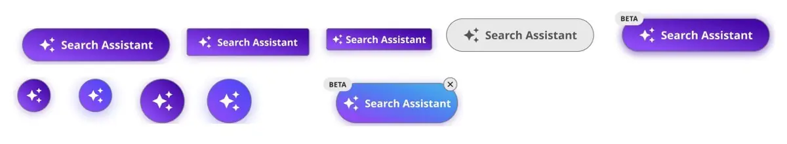
Problem 3: the clash
Redesigning Smart Search so the two features stop competing
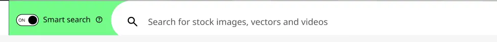
Before
A bright green block fused to the search bar. It looked like a primary action.
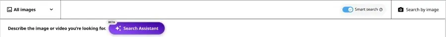
After
A quieter toggle styled as a setting, separate from the purple assistant button.
A help tooltip explains it in one line: "Try describing what you're looking for in your own words. Switch it off for exact keyword matching."
Validating it with an A/B test
Moving Smart Search was a risk, because it's tied to how people search and buy. So we A/B tested it.
Question
Result (new toggle vs original)
Did it hurt sales?
No evidence. Without a few unusually large orders, revenue , average order value , transactions .
Did search behaviour change?
Barely. Image clicks flat at −0.8%.
Is the toggle still easy to find?
Less so. "Switch on" interactions fell 18.4%.
The change is commercially safe. The lower discoverability is the trade-off for letting the assistant stand out, and a clear target for the next iteration.
Designing the AI
Designing how the AI behaves, not just where it sits
A conversational tool has states a search box doesn't: an empty conversation, waiting, answers that could be wrong, and people who don't know what to ask. I designed for each one.
Moment
Risk
What I designed
First visit
People think it generates images
An introduction that says what it does and what it doesn't: it finds real Alamy images. Plus pro tips, like "Specify colour, mood and orientation" and "Refine anytime: make it warmer".
Blank start
People don't know what to ask
A greeting and "Try asking…" prompts, like "I want blue sky images with bird flying".
Before results
An empty page feels broken
A ghost grid that says "Results appear here. Chat with Search Assistant to find the images you need."
Vague requests
Too many irrelevant results
Follow-up questions that narrow the search, with results updating live beside the chat.
Trusting answers
AI suggests images that don't exist
Every suggestion links to a real image by its reference number, with a count of matching images.
Voice
Not knowing if the mic is on
"Speak your search" with a clear listening state, fixing the top complaint from testing.
Wanting out
Feeling trapped in the AI
"Back to classic search", always visible at the top of the chat.
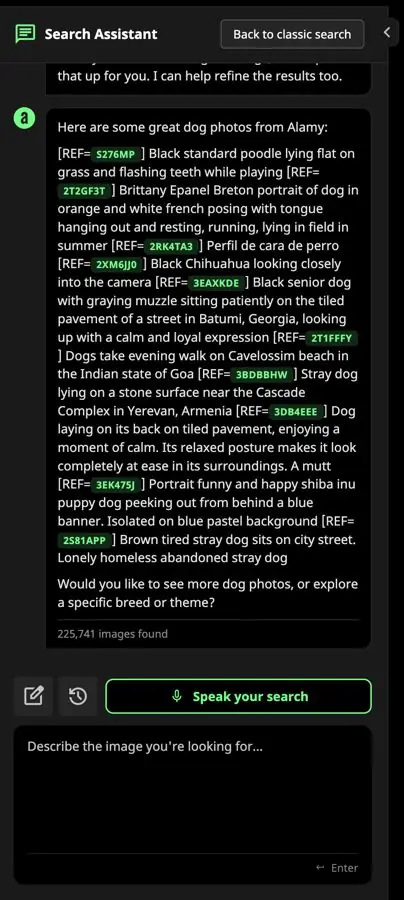
Grounded answers
References link to real images, with a count underneath.
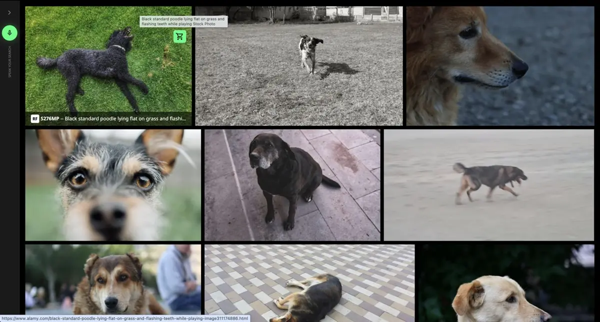
Collapsed view
The chat folds into a rail with voice still one click away.
What the live beta taught me
The references work: people who find them click them repeatedly. But in the live beta they run inline as raw codes in a dense paragraph, which makes answers hard to scan. The next iteration turns answers into a short intro plus scannable image references, so the answer reads like a designed message, not system output.
What I built
One assistant, reachable from anywhere
The assistant has its own page at alamy.com/search-assistant, and the AI button follows people across the site.
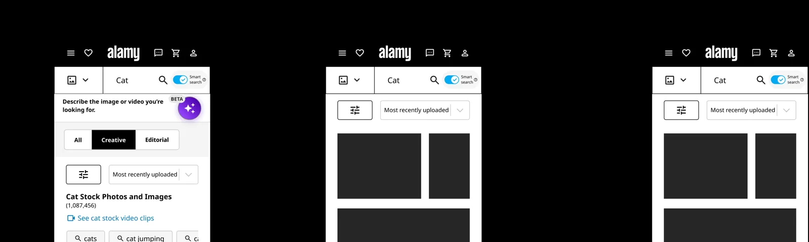
Mobile, three states: the prompt under the search bar, the floating button as you scroll, and the expanded button with a hint. Smart Search stays a compact toggle in the search bar.
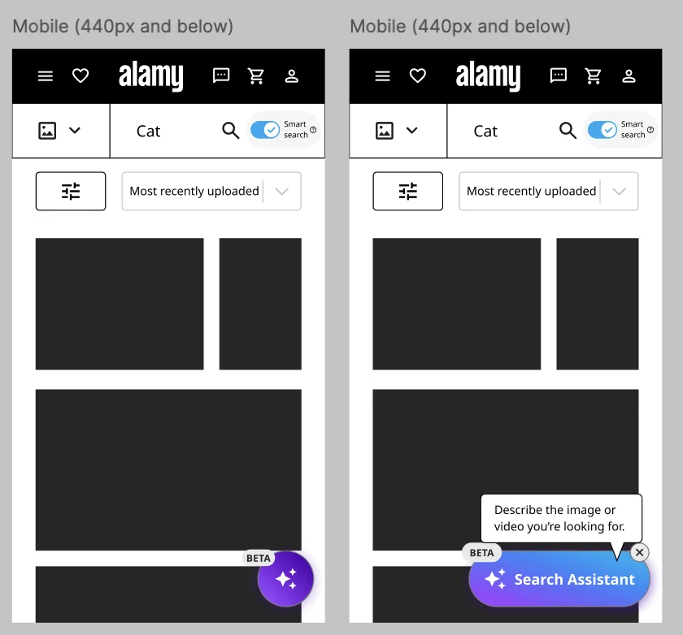
Close-up of the floating states on mobile (440px and below). As people scroll, the prompt collapses into a floating AI button, which expands into a labelled "Search Assistant" button with a dismissible hint.
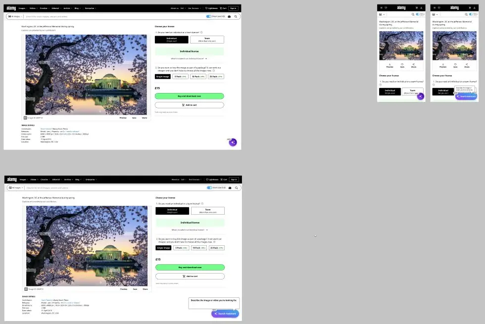
Product pages
A floating button with a Beta tag, expanding with a hint.
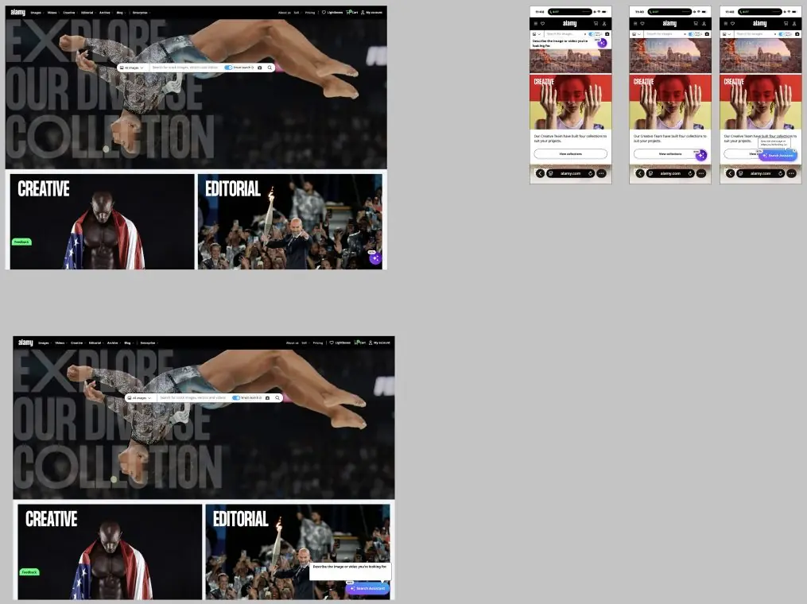
Homepage
One tap away before anyone searches.
Results
Live on alamy.com, with early signals
Five days after launch, the analytics team shared the first usage data. The numbers are small, but they already say something about the design.
Usage figures are locked below and shared in interviews. What can be shared openly: the A/B test found no revenue impact from the Smart Search change, and image clicks stayed flat at −0.8%.
Visitors who went on to search
of , averaging searches each
Image click-through
image clicks from searches
Tried voice search
about times each
What the data shows
What it says about the design
Most opens came from the results page button: clicks from users
The placement work paid off.
The homepage floating button drove clicks from users, more from mobile than desktop
Taking the AI button beyond results, mobile first, reached people before they searched.
users clicked chat references times each
References are valuable, so making them scannable is worth it.
went back to classic search at least once
The way back works. Next: are people comparing, or leaving unhelped?
Visitors to the assistant also converted . That's not proof it caused the purchases, and more precise tracking is now in place.
Testing results are directional (12 people per round). Beta data is from GA4, first 5 days.
What I learned
Four lessons I'll carry forward
Don't pick a winner too early
Rounds 1 and 2 each had a clear strength. Treating them as ingredients showed what the final design needed.
Names are design
"Speak your search" and "Classic search" fixed confusion that visual tweaks couldn't.
AI features need to say what they're not
Several people assumed the assistant generated images. On a marketplace selling real photography, the copy has to be explicit.
Every design choice has a cost, so measure it
The A/B test showed the Smart Search change was safe, and exactly what it cost. Knowing the cost means we can decide, instead of guessing.
What's next
Scannable answer formatting for image references
Understanding why return to classic search
Making the Smart Search toggle easier to find without competing again
Discovery case study · Alamy, stock images and video marketplace
Rebuilding Alamy's Lightbox
Turning a 15-year-old, overloaded save feature into two purpose-built products, grounded in stakeholder interviews, usability testing, competitive analysis and a full quarter of live analytics. This is part one: Customer Collections, the customer-facing product.
My role
Product Designer: discovery, journey mapping, wireframes and design
Agile team: 1 product manager, 1 product designer (me), 2–3 developers, QA, 1 solutions architect and 1 SEO specialist, plus content, distribution and sales stakeholders
I owned
Discovery, stakeholder interviews, usability testing, analytics, journey mapping, wireframes, all eight final screens and the requirements audit
Tools
Claude Code for analysis, Figma with Alamy DS 2.0 via Figma MCP, GA4, UserTesting.com
Lightbox was built to let customers save images for later. Over a decade it quietly became the tool behind customer saves, sharing, internal curation, sales outreach, enterprise downloads and even export workflows. It was never designed to carry any of that weight.
What was broken
Evidence
No way to move between collections mid-task. The most common complaint across all 20 sessions.
Confirmed by 3 sources
The save icon looked like a navigation icon and never changed state. People couldn't tell if saving had worked.
Confirmed by 3 sources
The label field was called "Comment". Three participants expected a caption or title and couldn't tell if they had finished.
Usability testing
None of 14 competitors use the word "Lightbox", and every major rival lets people share without logging in. Alamy didn't.
Competitive gap, high priority
What I found
Four methods, one validation tracker
I tagged every problem by how many independent sources confirmed it, so design decisions could be prioritised by strength of evidence, not opinion.
Method
What it covered
Stakeholder interviews
5 internal teams across content operations, curation, distribution and sales, each with its own undocumented workflow built on Lightbox
Usability testing
20 participants in 8 countries, 11 tasks each, on the live product rather than a prototype, to get a real baseline
Competitive analysis
14 platforms, from Getty Boards to Milanote, scored against the same set of problems
GA4 analytics
A full quarter of live traffic, recovered from raw exports after dashboard widgets hit quota errors
Three findings that reframed the project
<1%GA4, full quarter
Of 6,081 users who interacted with an image inside a Lightbox, only 0.86% downloaded, 0.69% added to cart and 0.51% saved again. Nearly everyone just clicked through to view. This turned "Lightbox feels like a dead end" from an anecdote into the hardest number in the research, and set the bar for what "fixed" had to mean.
32%GA4, page-level data
An internal editorial series, "See The World In 40 Images", drove about 25,750 users, nearly a third of all Lightbox traffic, from just 7 editions. But each edition's page was reused for an unrelated auto-generated page once its run ended. The demand for curated content was real. It just had nowhere permanent to live.
3/3Interview, usability testing and competitive analysis
"No persistent navigation between collections" was the only problem confirmed by all three qualitative methods at once: a stakeholder's own walkthrough, the most common usability complaint, and a named competitive priority.
How I decided
Not "Lightbox 2.0", but two products on one foundation
The research kept pointing to the same root cause. Lightbox served two audiences with very different needs: casual customers saving a handful of images, and professional curators managing briefs of 1,000+ assets. Rebuilding one unified tool would have repeated the original mistake.
Collections Core
The shared foundation: data model, permissions, sharing and restriction handling. Invisible to users, but both products sit on it.
Part one, this page
Customer Collections
Replaces the customer-facing Lightbox. Save, organise, share, add to cart and download. Simple, modern and focused on conversion.
Part two
Curated Collections
An internal tool for picture researchers and sales teams to build, order, publish and share handpicked collections, as a new tab in the curation tool I designed in 2024. Read part two
The research covered both audiences and shaped the split. I designed both products; this page follows Customer Collections, and part two covers Curated Collections.
How I planned it
Every step traced to a source
Before drawing screens, I mapped the five core Customer Collections journeys. Each step is annotated with the interview, usability finding, requirement or analytics number that justifies it. Nothing is in the flow because it seemed reasonable.
First saveOutcome: saving never silently fails
Save to an existing collectionOutcome: organise by project without losing context
Manage a collectionOutcome: saved assets stay findable and manageable over time
Share a collectionOutcome: shared collections are clear, secure and usable
The full journey map. Each flow has a "why we built it this way" evidence trail underneath.
Where design is heading
Eight screens, one evidenced flow
The wireframes follow the journey map directly: no screen exists that isn't a step in the map. Two gaps only appeared once wireframing was underway: a true empty-collection state, and a way to add assets from inside a collection.
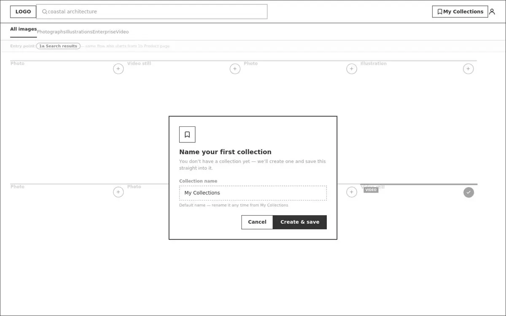
First save
Search results and product page merge into one flow. Saving never silently fails, and a blank name defaults to "My Collections".
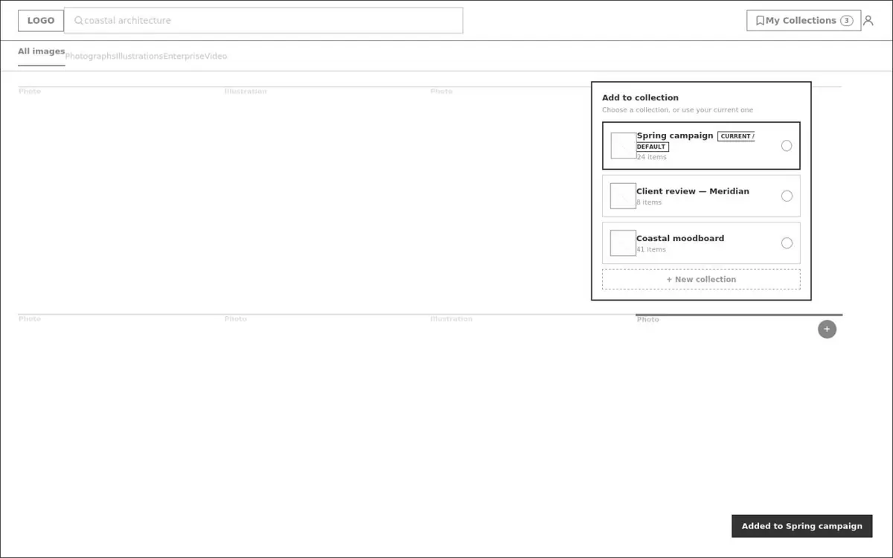
Save to an existing collection
One consistent rule replaces the old inconsistent behaviour: the current collection is pre-selected, and the full picker is always available.
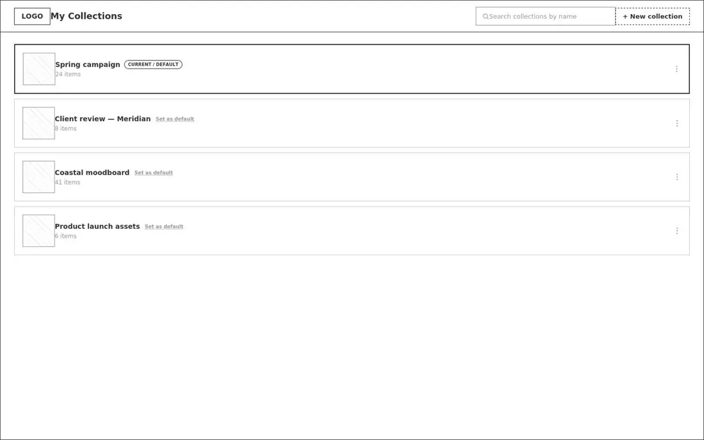
My Collections
Search by name, and a visible way to see and change the current collection, closing a must-have requirement no journey covered before.
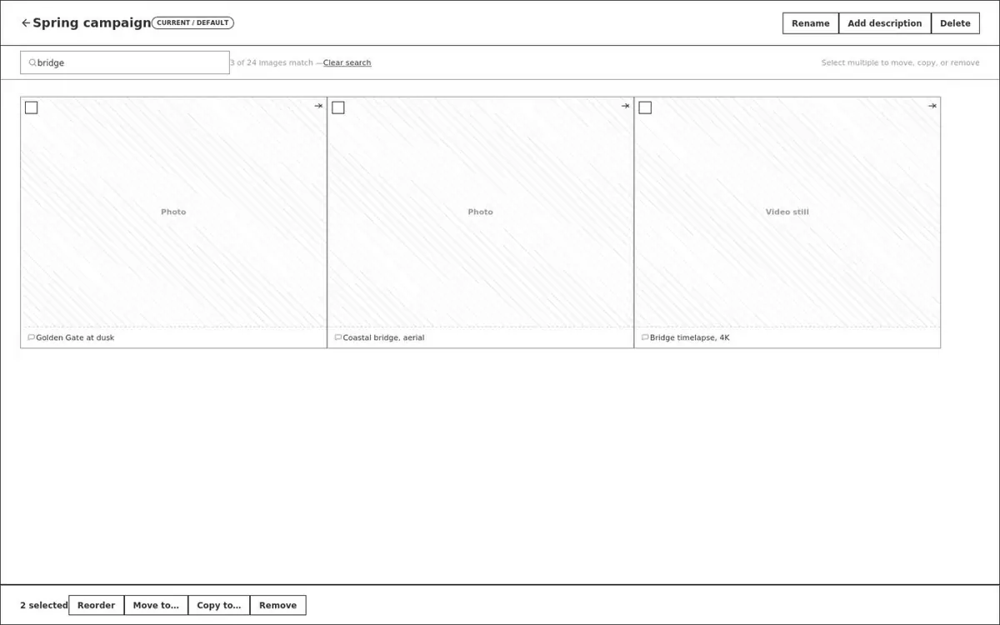
Inside a collection
Search within the collection, visible captions, and bulk reorder, move, copy and remove, answering the reorder complaint from testing.
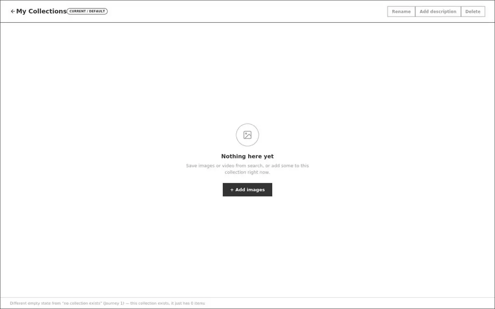
Empty collection
An invitation to act, not a blank page, and deliberately different from the "no collection yet" state in first save.
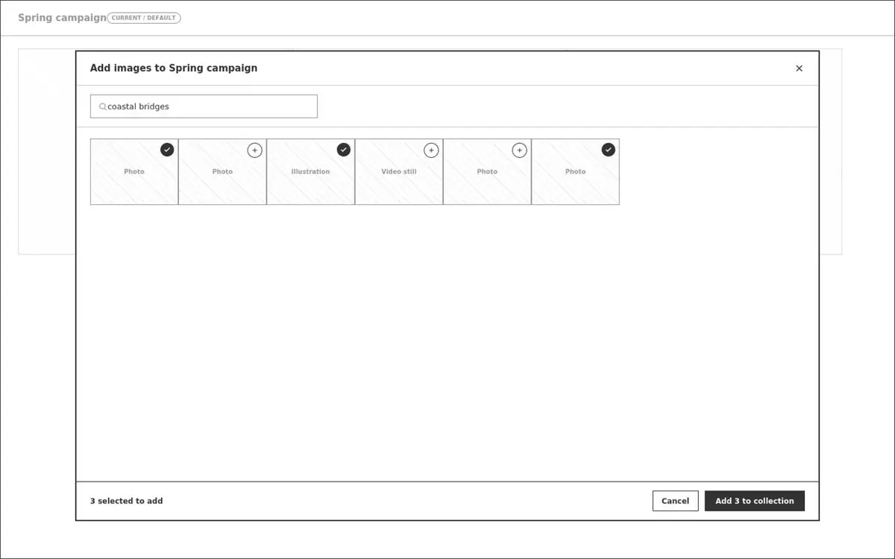
Add assets from inside a collection
A gap found in review. It reuses the same picker pattern as saving to an existing collection.
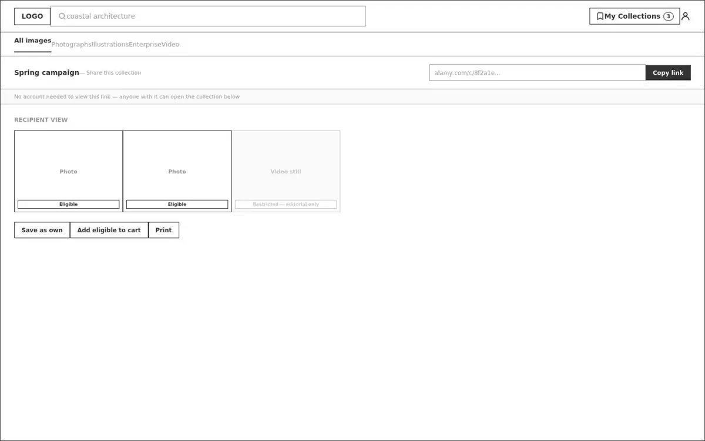
Share a collection
No account needed to view, matching every serious competitor, with restricted assets flagged for the recipient too, not just the owner.
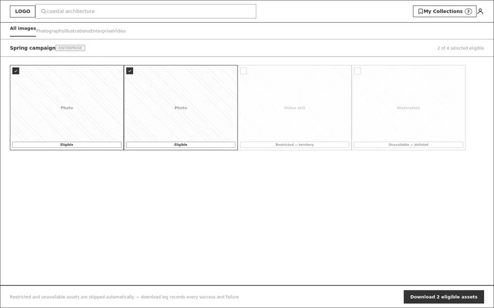
Enterprise download
Eligible, restricted and unavailable assets are flagged per item. Restricted ones are skipped automatically and every attempt is logged.
From wireframes to design
On-brand, in the real design system
I designed all eight screens in Alamy's real design system: the brand green, black navigation and real components. A teammate had built a working prototype in the same tokens, and for one screen I adopted its paste-by-reference pattern because it matched how the team actually works.
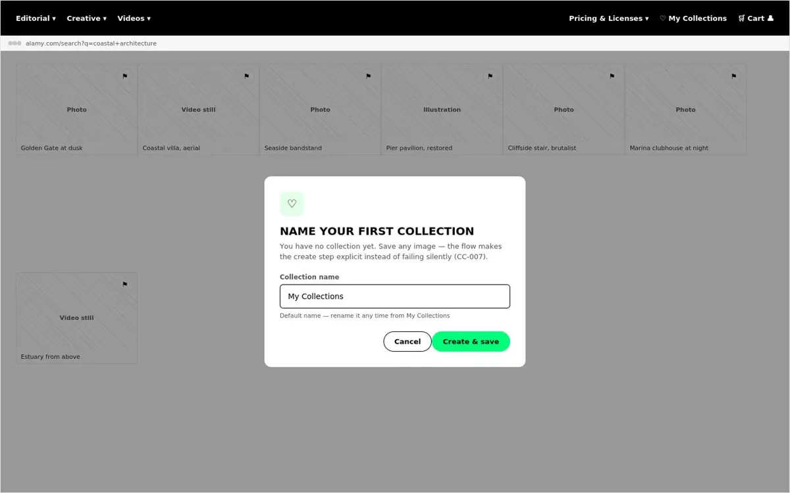
First save
Alamy green and the black navigation replace the grey placeholders. Same flow, on-brand.
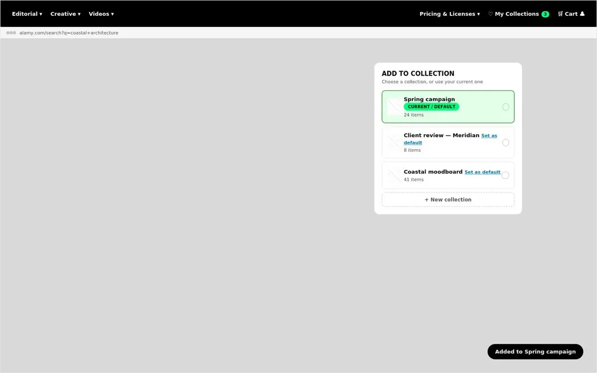
Save to an existing collection
The current collection badge and picker, matching the real component library.
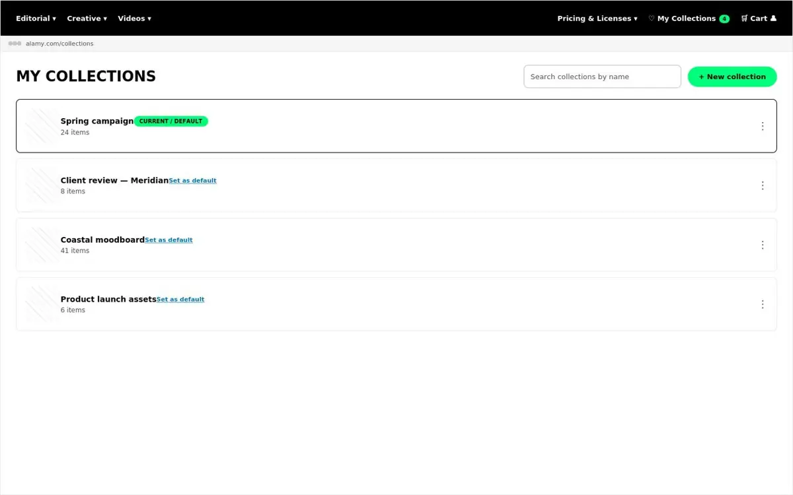
My Collections
The list view with the on-brand search bar and primary action.
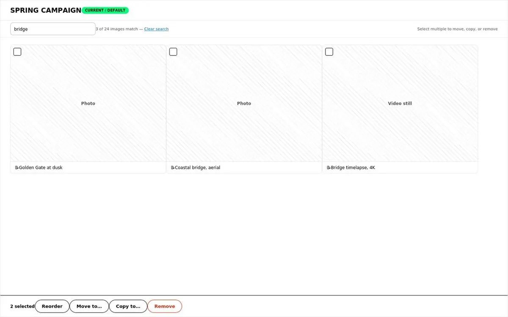
Inside a collection
Search within, captions and the bulk action bar in the real system.
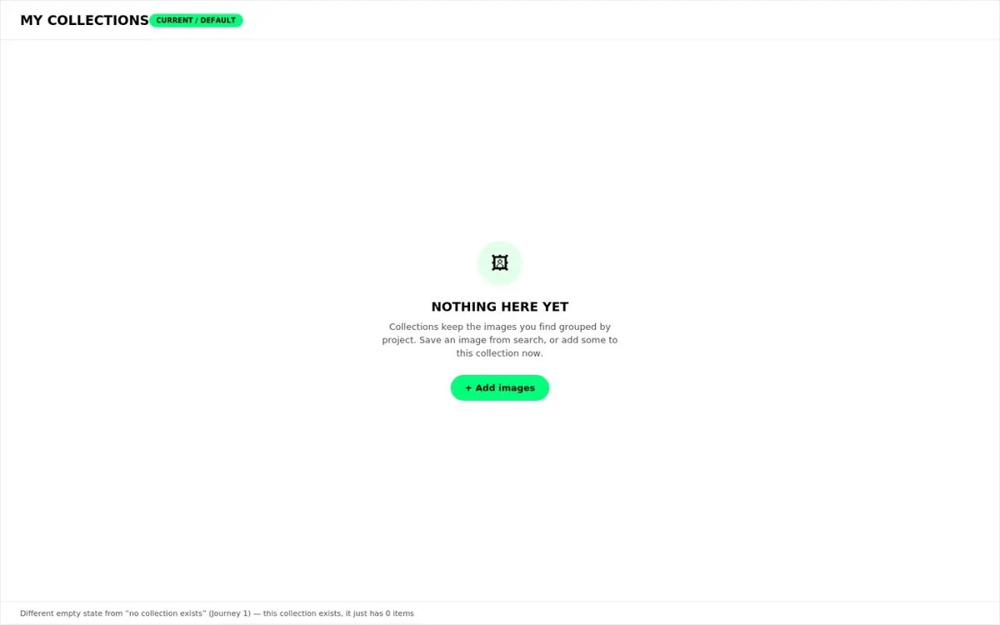
Empty collection
The invitation-to-act empty state, on-brand.
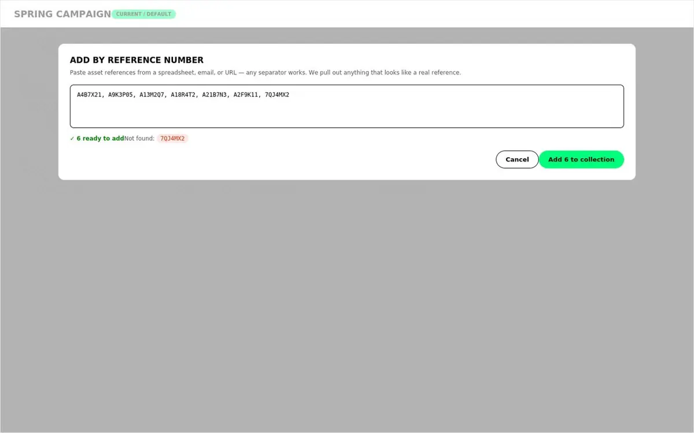
Add assets by reference number
Changed from my search picker to paste-by-reference, adopted from the prototype, because it matches how the internal team actually works from spreadsheet exports.
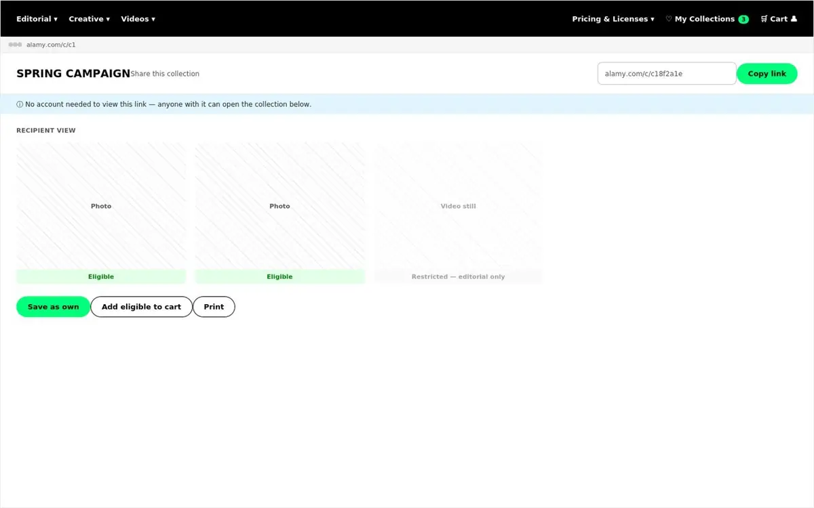
Share a collection
The no-login recipient view with restricted assets flagged.
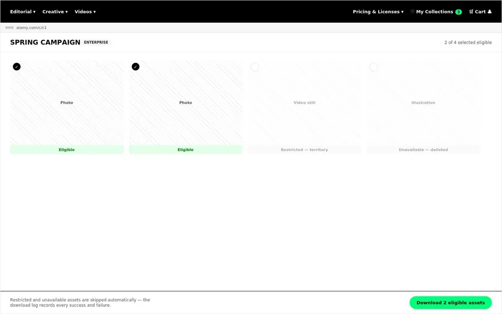
Enterprise download
Eligibility flags in the real system. Drag-to-reorder is still missing here, and I've flagged it as an open gap rather than dropping it quietly.
How I checked it
Auditing the design against the requirements, line by line
Once the wireframes existed, I checked every one of the 33 customer-facing requirements against the journey map, rather than assuming they were covered. I ran this audit, and the evidence tracking behind it, with Claude Code, then reviewed every finding myself.
25 of 33 requirements met in the design76%
Requirement
What the audit caught
Create a collection
Creating a collection only appeared in the save flow, never from My Collections, although the requirement named both. Added as its own step.
Entry points
Search results and product page had been merged into one step, hiding two required entry points. Split into two that visibly join one flow.
Shared downloads
Restriction-aware downloads only existed on the owner's side, never for a recipient viewing a shared restricted asset. Added to the share journey.
Video support
Video support was a must in the customer requirements but missing from the internal Curated Collections requirements, an inconsistency between two documents for the same platform.
Where it stands
Design in progress, with a baseline to beat
Discovery and journey mapping are complete, and all eight Customer Collections screens exist as wireframes and on-brand designs. Naming, migration strategy and a few other product decisions are open with the PM before handoff.
How I'll know it worked
Because testing ran on the live product and analytics covered a full quarter, every measure has a real baseline:
Downloads and add-to-cart from inside a collection, starting from under 1%
Ease of reordering, the lowest-scoring task in testing at 4.6/5
Ease of multi-select and move, at 4.75/5 on the current Lightbox
A permanent home for curated content like "See The World In 40 Images"
What I'd take from this
The most useful discipline wasn't any single research method. It was refusing to let a design decision stand without a named source behind it. That is what surfaced the missing "create a collection" step and the video inconsistency: not new research, just a systematic check against what had already been decided.
Designs are in progress and may change before handoff. All data comes from internal research at Alamy.
Curated Collections: designing inside a real system
The internal tool for picture researchers and curators to build, publish and share handpicked collections, as a new tab inside the curation tool I designed in 2024. When I found my new wireframes didn't match the live tool, I rebuilt them in the real design system, and surfaced three gaps the requirements had missed.
After Customer Collections, it was tempting to reuse its journey structure. I didn't: curators do different work at a much larger scale, so I started from the raw evidence and then stress-tested the requirements against it.
They mostly did. But three themes, export and API access, real-time collaboration, and territory-scoped views, had zero coverage across all 40 requirements.
Two different interviewees raised them independently, with a concrete solution already on record.
What I mapped
Four flows, evidence first, gaps included
I used the same approach as Customer Collections: every step traced to a source. But this map also says openly when a journey rests on requirements rather than a validated complaint.
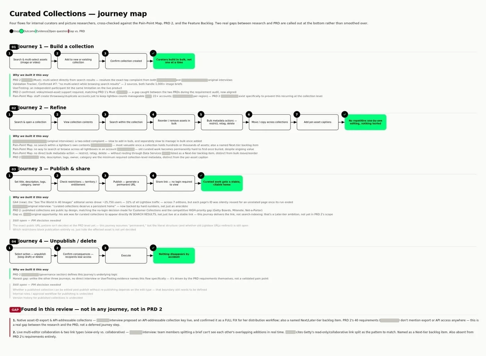
The full journey map, with a red section at the bottom for what research found and the requirements never picked up.
How I decided
Going back to the tool I'd already designed
Seven wireframes in, working from the requirements alone, I went back to the Curation Tool file, the tool I designed in 2024 for the content team. Curated collection screens had already been started there in Alamy Design System 2.0, some marked "Ready for dev", and my new wireframes didn't match them.
I had two honest options: keep my new version, or throw out the guesswork and rebuild to match. I rebuilt, working from the real components in Alamy DS 2.0 through Figma MCP, so the new screens use the same system as the live tool. Three of my assumptions turned out to be wrong in ways that mattered:
What I assumed
What the real tool does
Theme
A light theme, matching Customer Collections
Dark, a deliberate choice for an internal, image-heavy curation tool
Structure
Collection management in modals
A persistent right-side panel, as a third tab next to Metadata and Boost images, tools curators already use every day
List view
A card grid, copied from Customer Collections
A dense, sortable table, right for people managing hundreds of collections
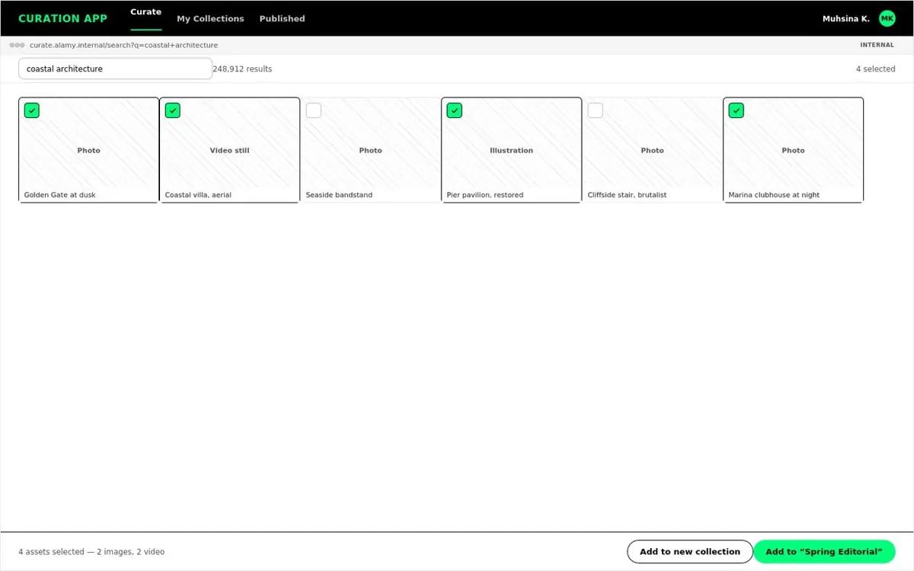
Before: my assumption
Light theme, invented tabs and modal-based creation. Reasonable guesses with no view of the real tool.
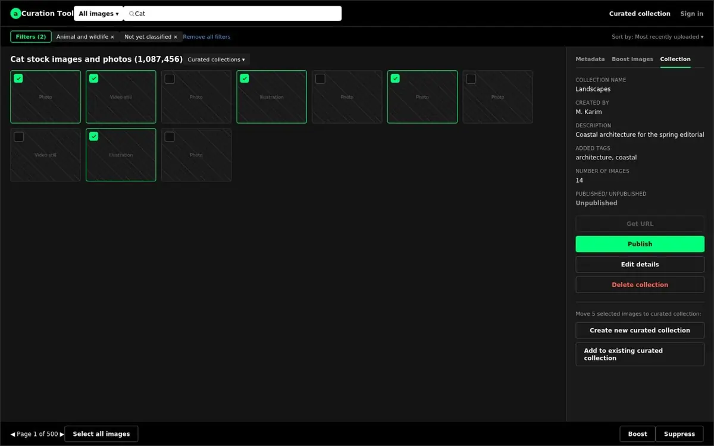
After: matched to the real file
Dark theme, the real header, and a persistent Collection panel instead of a modal.
What I built
Matched to the real system
Four of the seven rebuilt screens. Each follows the real Curation Tool's patterns where I could check them. Where I couldn't, the screen says so.
Search and multi-select
The Collection panel appears as soon as assets are selected, with only two actions: create new, or add to existing.
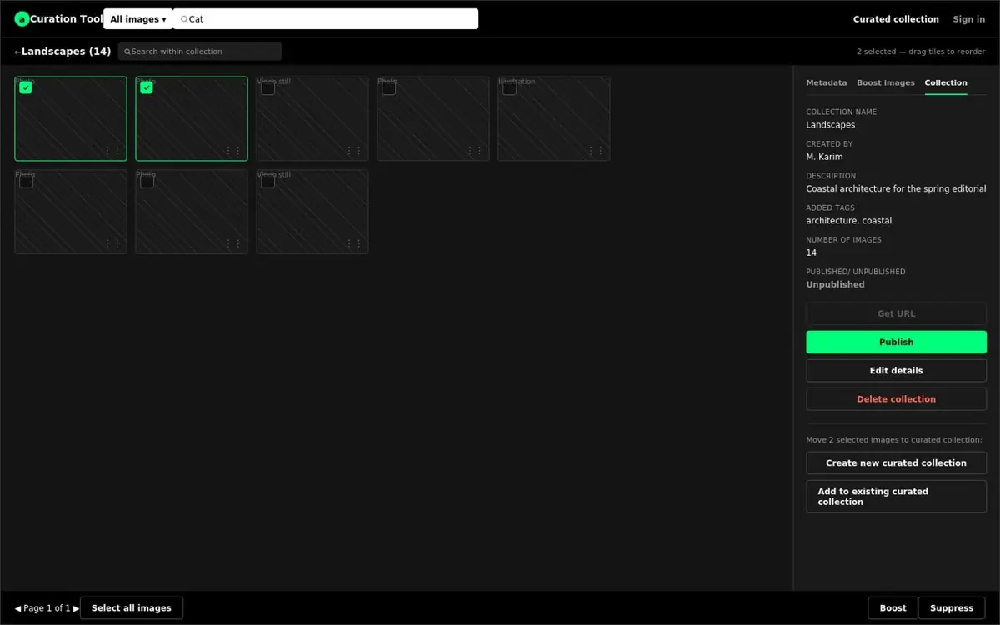
Refine a collection
Search within, drag to reorder, and the same persistent panel showing the collection’s metadata.
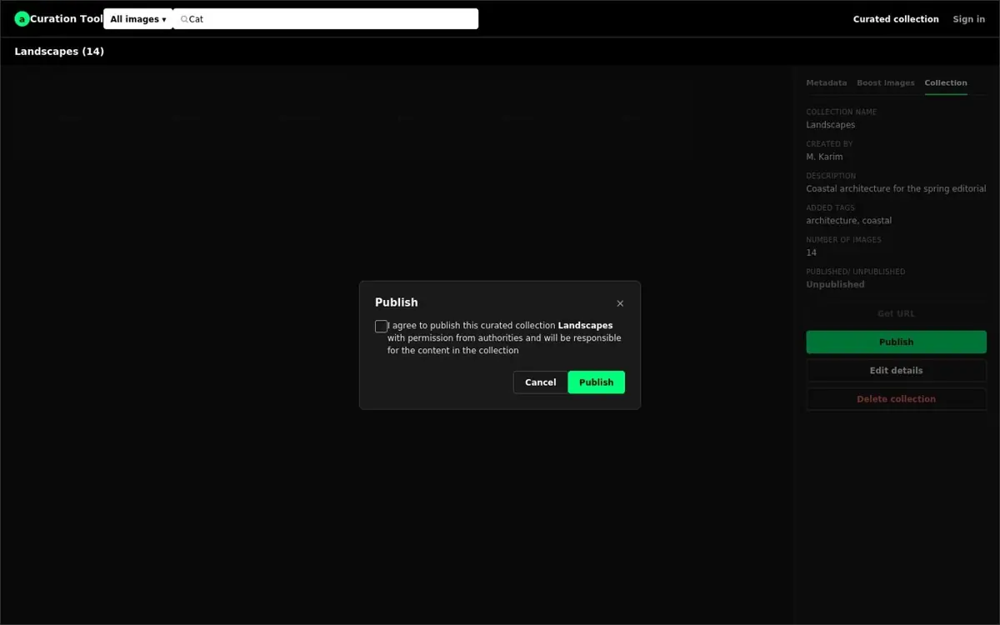
Publish
The real copy, where the curator agrees to be responsible for the collection’s content. Not something I’d have guessed.
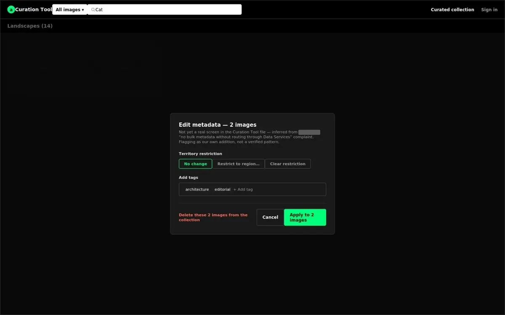
Bulk metadata actions
No real screen existed. Kept as my own proposal from a specific research complaint, and labelled that way on the screen.
Where it stands
Six screens verified, three gaps handed to the PM
Six of seven wireframes are confirmed against the real Curation Tool. Three evidenced gaps, export and API access, real-time collaboration, and territory-scoped views, are flagged for the PM rather than designed around on my own.
What I'd take from this
The useful instinct wasn't building fast. It was being willing to throw out seven screens the moment better information appeared, instead of quietly keeping the version I'd already invested in. The rebuilt wireframes are more accurate because the first version was wrong in specific, nameable ways.
Contributors spent 20 minutes and 25 clicks on every upload
Contributors, mostly professional photographers and agencies, supply the images Alamy sells. The platform they used was eight years old, broke on smaller screens and threw frequent JavaScript errors.
Time to upload and tag
20+ min
Clicks per submission
25+
Quality control wait
24h+
Goals
Reduce time on task and clicks for uploads and metadata
Remove responsiveness and JavaScript errors
Use AI to speed up repetitive tasks like tagging
Improve contributor satisfaction and completion rates
What I found
Tagging was the biggest drain, and contributors wanted smarter tools
This wasn't a cold start. The contributor blueprint I mapped in 2023 had already shown where this journey broke down. I built on it with:
Interviews with photographers and agencies
Analytics in Microsoft Clarity and Google Analytics
Usability testing of the existing workflow
End-to-end journey mapping
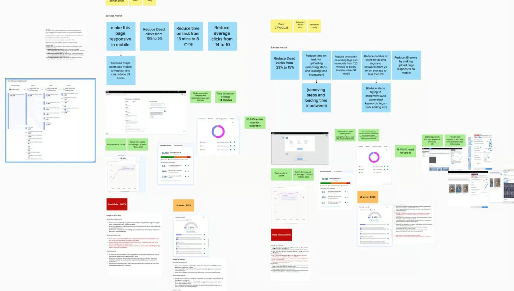
The discovery board: 30 days of Microsoft Clarity data for registration and upload, with a success metric set for each problem.
Baselines and targets
Before designing, I set a measurable target for each problem, using 30 days of Microsoft Clarity data for two flows: contributor registration (11,035 sessions) and upload (25,746 sessions).
Flow
Metric
Baseline
Target
Registration
Time to register
13 min
8 min
Registration
Clicks to register
14
10
Registration
Dead clicks
15.7%
5%
Upload
Time to add tags and keywords
~20 min
Under 10 min
Upload
Clicks to add tags and keywords
25
Under 20
Upload
Dead clicks
23.8%
15%
Both
JavaScript errors
7.6% registration, 8.6% upload
Reduce by making pages responsive
Time on task: baseline vs target
Minutes, from Microsoft Clarity
Register
13 min
Target
8 min
Tagging
20 min
Target
10 min
Device data changed the priorities: 57% of registrations happen on mobile, while 79% of uploads happen on desktop. So registration had to work on phones first, and upload had to be fast for bulk work at a desk.
Key insights
Upload and metadata entry averaged 25 clicks and over 20 minutes
Quality control took over 24 hours, delaying when images went live
JavaScript errors and poor responsiveness caused drop-offs
Contributors wanted faster, smarter help with repetitive tagging
How I decided
Let AI do the typing, and let people stay in control
Each insight became a design direction:
What we saw
What I designed
Tagging every image by hand
AI-generated captions, keywords and locations to review, not type
Repeating the same edit on many images
Bulk editing across a selection
Errors found only after submitting
Inline feedback and validation as you go
Different upload habits
Drag and drop and click to upload
Broken on smaller screens
A fully responsive interface on Alamy's design system
Users need to understand what the AI did and trust its suggestions. AI metadata had to be easy to see, check and correct.
I worked with product managers on priorities and scope, engineers on feasibility and integration, and content reviewers to match their quality standards.
What I built
A faster upload flow with AI metadata and bulk editing
From a usability test: a contributor picks photos, then sees the new confirmation, which says quality control takes up to 24 hours and they'll get an email when it's done.
Results
60% fewer steps, and every participant completed their tasks
Three rounds of usability testing on UserTesting.com with real contributors. Participants uploaded images, added metadata and used bulk editing.
Steps to upload and tag
~25~10
Task completion
100%
Satisfaction
4.6 /5
What testing changed
Feedback led me to make bulk editing easier to find and to add clearer confirmation after saving.
Results are from usability testing. Time on task and quality control time will be measured after launch.
What I learned
AI only helps when people can see what it did
Working on AI features taught me that transparency is part of the interface. Next, I'm improving how clear AI metadata is and testing complex bulk edit workflows.
What I'd do differently
Bring contributors in earlier, during ideation, to co-create features that match how they already think and work.
The team curating search had no real control over it
Alamy has a rich library of authentic images, but search results were static. The content team worked in an outdated CRM that was slow and limited, made metadata editing time-consuming, and had no way to influence what customers saw in search quickly.
Goals
Speed up curation and metadata editing
Let the team boost and suppress images in search in near real time
Automate repetitive quality control tasks
Match the team's mental model of how search works
What I found
Shadowing showed where the hours went
I interviewed the content team, watched them work through demos and shadowing, mapped their pain points, and ran weekly feedback sessions throughout design and build.
Discovery: the old CRM, what the content team told me, and the pain points I mapped from it.
The old CRM was slow and severely limited
Editing metadata took multiple steps
Quality control was repetitive, with no automation
The team needed to change search results, and needed it fast
How I decided
Build on the search people already know
Instead of a separate back-office system, I designed the tool on top of Alamy's existing search interface. The team could curate in the same view customers see, which made the effect of every change easy to understand.
Need
Design response
Find the right images fast
New filters and grid views on a faster search interface
Edit metadata without friction
Inline editing with authenticity ratings and bulk selection
Organise content
Add and remove images from collections and lightboxes
Control what customers see
Boost and suppress images in search results
The curation tool: selected images in the grid, the metadata panel on the right, and boost and suppress in the bottom bar. A warning flags images that are already boosted.
I tested prototypes with the content team every week, and partnered with search engineers to make boosting and suppression work with the search infrastructure.
What I built
The live tool, screen by screen
These are the core workflows the content team uses every day: finding images by collection, moving them, boosting and suppressing in bulk, and editing metadata across many images at once.
Filter by collection
Creative and Editorial collections sit in one dropdown, and every selection becomes a removable chip above the grid.
Move between collections
Pick an image, then move it from the Collection tab. The confirmation appears in place, with Undo.
Bulk suppress. Before anything changes, a warning says which selected images are already suppressed and won't be affected. The button then shows progress.When it finishes, a toast confirms how many images changed, with Undo.Bulk metadata. With many images selected, the panel shows the values they share and marks fields that differ as "Multiple values". Boosting warns about images that are already boosted.
Results
From days to under 24 hours
The content team tested every workflow with me in weekly sessions, so the results come from the people who use the tool every day.
What we measured
Old CRM
New curation tool
Change
Correcting what appears in search
Days
Under 24 hours
From days to hours
Moving images between collections
Baseline
Half the time
50% faster
Clarity and ease of use
Not measured
4.5 out of 5
Early team feedback
Time to move images between collections
Relative to the old CRM (old = 100%)
Old CRM
100%
New tool
50%
Clarity and ease of use
Early feedback from the content team
4.5out of 5
"I can finally make changes that actually show up in search quickly. It feels like we have real control now."
What the tool does today
The tool has kept growing since launch. Features live today, and what's in progress:
Feature
What it does
Status
Boost and suppress
Push images up or down in search results, and undo it
Live
Move images between collections
Move one or many images, with a searchable collection picker
Live
Filters
Filter by boosted or suppressed, editorial restrictions and novel use
Live
Layout and preview
Grid layout, preview box, image tiles, pagination and a result count
Live
Bulk keyword editing
Edit keywords across many images at once
In progress
Export metadata as CSV
Take metadata out of the tool for reporting
In progress
Remove AI images
Clear AI-generated images from results
In progress
Curated collections
A third tab for building and publishing collections (2026), covered in Curated Collections
In progress
What I learned
Internal users shape what customers see
Improving the content team's tools directly improved the relevance of search for customers. Internal users deserve the same care as external ones.
A tool that keeps growing
Because the tool was built on a solid structure, it became the home for new work. In 2026, Curated Collections joined it as a third tab beside Metadata and Boost images, so curators build collections in the tool they already use every day.
What I'd do differently
Shadow the team for longer, to catch the edge cases that only appear after weeks of daily use.
Alamy had run for years, but no one had an end-to-end view of how it worked, from winning an enterprise customer to onboarding a contributor. Teams worked in silos with fragmented tools and unclear ownership, which led to duplicated work and long turnaround times.
How I did it
Five departments, two journeys, one map each
Interviewed people across Content, Accounts, Marketing, Contracts and Tech
Documented workflows through process walkthroughs
Mapped stakeholders to see dependencies and handoffs
Ran journey mapping workshops to validate and align
Reviewed drafts with every team until they confirmed accuracy
I kept the blueprints detailed enough to surface real insight, but clear enough for non-designers to use.
What I found
The business was duplicating work without knowing it
Too many manual steps and outdated communication channels
Teams repeated each other's work because processes weren't aligned
Unclear ownership and fragmented tools caused long turnaround times
No team could see what happened before or after its own stage
Enterprise journey
Pain pointLine of visibility: customers see what's above it
Stage
Discover
Enquire
Agree terms
Onboard
Use the account
Customer actions
Finds Alamy and explores the collection
Asks about enterprise pricing and licences
Reviews and signs the agreement
Sets up the account and users
Searches, downloads and licenses images
Front stage
Website and marketing campaigns
Sales conversation
Contract sent for review
Welcome and account setup
Website, account manager support
Back stage
Marketing
Accounts and sales
Contracts
Accounts and Tech
Content and Accounts
Support systems
Website, CRM
CRM, email
Contract documents, email
Account setup tools
Search, download and billing systems
Pain points
—
Manual steps and handoffs
Unclear ownership between teams
Work duplicated across teams
Teams can't see earlier stages
From first interest to using the account: what the customer does, what they see, the teams behind it, the systems, and where it breaks down.
Contributor journey
Pain pointLine of visibility: customers see what's above it
Stage
Join
Upload
Add metadata
Quality control
Go live
Ongoing
Contributor actions
Signs up as a contributor
Uploads images
Adds captions, keywords and locations
Waits for review
Images appear in search
Tracks sales and uploads more
Front stage
Contributor sign-up
Upload tool
Metadata forms
Submission status
Live on alamy.com
Contributor account
Back stage
Content team
Tech
Content team
Content reviewers check quality
Search and content teams
Accounts
Support systems
Contributor platform
Contributor platform
Contributor platform
Review tools
Search
Reporting and payments
Pain points
—
Poor responsiveness and JavaScript errors
25+ clicks and 20+ minutes per submission
Quality control takes over 24 hours
Delays before images earn
Outdated communication channels
From joining to ongoing uploads. The upload, metadata and quality control pain points became the focus of the Contributor Experience Revamp.
Simplified versions recreated for this portfolio. The original blueprints hold more detail and internal information.
Impact
From a map to a redesign
I presented the blueprints to leadership and cross-functional teams. They became a single source of truth for how processes worked and showed leadership bottlenecks they hadn't known about.
"This is the first time we've been able to see the full picture. It's amazing how much we were duplicating work without realizing it."
Beyond Zeal, monthly live music series, Trivandrum
between us
Naming and brand identity for a monthly live music evening: one artist, one room, a new edition every month. I named it, built a colour system that changes with each edition, and designed everything from posters and tickets to a bookmark and a full Instagram kit.
My role
Naming, brand identity, colour system, print and social design
Client
Beyond Zeal
Format
Monthly gig series, numbered by edition
Deliverables
Posters, ticket, seal, goody tag, standee, bookmark and Instagram kit
Status
Edition II held on 3 July 2026 at BU.MI, Trivandrum
curated by Beyond Zeal
between us
Featuring
Artist Name
Edition I
between us
curated by beyond zeal
between us
curated by beyond zeal
between us
curated by beyond zeal
The portrait poster and the three logo lockups: dark, light and pastel.
Beyond Zeal curates an intimate live music evening in Trivandrum. Each month there is one artist and one room, and the audience sits close enough to feel every note.
The identity had to feel personal, and it had to come back every month without going stale.
The name
between us
The name describes the experience. The music is shared between the artist and a small audience, rather than performed at a crowd. It is always set in lower case, with "us" in italic, so it reads quietly, like something said rather than announced.
"an evening close enough to remember"
The line on the back of the bookmark and in the closing posts.
Colour system
One constant palette, one colour per edition
Black, off-white and two greys stay the same every month. Each edition adds a single pastel, used for a thin stripe along the top of every piece and as the background of the pastel versions. Every edition looks like part of the same series, while each month still gets its own colour.
Pick an edition to recolour every piece on this page.
Black#0A0A09
White#F8F6F2
Mid Grey#7A7870
Faint#C0BCB6
Dusty Rose#E8C4B8
Typography
A light serif and a widely spaced sans
Cormorant Garamond in a light weight carries the name and the artist. Raleway, set small in widely spaced capitals, handles every supporting detail. The contrast between the two does the work that decoration usually would.
between us
Cormorant Garamond · Light 300 and Light Italic
curated by Beyond Zeal Edition I
Raleway · Light 300 · wide tracking
Print
Posters, a ticket and things to take home
Each piece comes in dark, light and pastel versions so they can be mixed at the venue. The ticket, seal, goody tag and bookmark give the audience something to keep after the evening.
Poster formats
curated by Beyond Zeal
between us
Featuring
Artist Name
Edition I
Portrait
Edition I · Beyond Zeal
between us
curated by beyond zeal
Square
Beyond Zeal
between us
Edition I · Beyond Zeal
Story
Ticket
between us · Edition I
curated by Beyond Zeal
between us
Featuring
Artist Name
Month
April
Edition
No. 01
Seat
General
No.
BU·001
BU · 001 · April 2025
Admit One
Seal, goody tag and standee
Official seal
between us
Edition I
curated by Beyond Zeal
Goody tag
curated by Beyond Zeal
between us
Monthly Gig Series
Edition I
Standee
Bookmark
A keepsake for the audience. The front carries the name vertically; the back carries the line from the evening.
curated by
Beyond Zeal
between us
Edition I
Dark · front
curated by
Beyond Zeal
between us
Edition I
Light · front
curated by
Beyond Zeal
between us
Edition I
Pastel · front
"an evening close enough to remember"
between us
Dark · back
"an evening close enough to remember"
between us
Pastel · back
Instagram kit
A template for every moment of the month
The kit follows the monthly cycle: the announcement, the artist reveal, a countdown, behind the scenes and a thank-you recap. Each template has a slot for that month's artist, and every template changes colour with the edition.
Feed posts (1:1)
curated by Beyond Zeal
between us
Featuring
Artist Name
Edition I
Announcement · dark
curated by Beyond Zeal
between us
Featuring
Artist Name
Edition I
Announcement · light
curated by Beyond Zeal
between us
Featuring
Artist Name
Edition I
Announcement · pastel
between us · Edition I
03
days away
Artist Name
curated by Beyond Zeal
Countdown
Stories (9:16)
curated by Beyond Zeal
between us
Featuring
Artist Name
Edition I · Beyond Zeal
Announcement
between us · Edition I
between us
This month
Artist Name
curated by Beyond Zeal
Artist reveal
between us
03
days away
Artist Name
Edition I · Beyond Zeal
Countdown
behind the scenes
your photo here
your photo here
between us
Edition I · Beyond Zeal
Behind the scenes
thank you
"an evening close enough to remember"
between us
Edition I · Beyond Zeal
Post-event mood
Carousel: event announcement
it's back
between us
Edition I →
what is it
A monthly intimate music evening. One artist. One room. Close enough to feel every note.
curated by Beyond Zeal
this edition
Artist Name
between us · Edition I
Edition I
"an evening close enough to remember"
between us
curated by beyond zeal
Carousel: artist reveal
between us · Edition I
between us
This month
swipe →
Featuring
Artist Name
between us · Edition I
About
A few lines about the artist: their sound, their story, what makes this evening theirs.
between us · Beyond Zeal
artist photo
Artist Name
between us · Edition I
curated by Beyond Zeal
"an evening close enough to remember"
between us
Recap
Edition I · done
between us
Thank you, Artist Name.
See you next month · Beyond Zeal
Recap · dark
Edition I · done
between us
Thank you, Artist Name.
See you next month · Beyond Zeal
Recap · light
until next time
"an evening close enough to remember"
between us
curated by beyond zeal
Recap · pastel
At the venue
Edition II, in print
Edition II featured Sayanora Philip at BU.MI in Trivandrum on 3 July 2026. The standee at the venue uses the system from the kit: "between us" in Cormorant Garamond with "us" in italic, the edition number and "Featuring" in widely spaced Raleway capitals, and the artist's name in the italic serif.
The Edition II standee at BU.MI, Trivandrum. That's me in the background, taking a photo.